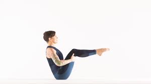
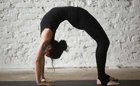

Advanced Poses
1.Boat Pose

How to do it
- it with knees bent. Place hands underneath knees. Tip back on the sitz bones and draw the lower back in and up as you hug your abs toward your spine. Lift shins parallel to the floor. Then stretch arms forward. Finally, straighten knees if you can.
Wheel Pose

How to do it
- Lie faceup with knees bent, feet flat on the floor, like you’re prepping for Bridge Pose. Position your feet parallel to one another, hip-distance apart, with heels under the knees.
-
On an inhale, bring your hands to the floor, framing your ears. Your fingers should be facing your heels.
- To come out of the pose, bend your arms and slowly lower your upper back down to the floor.